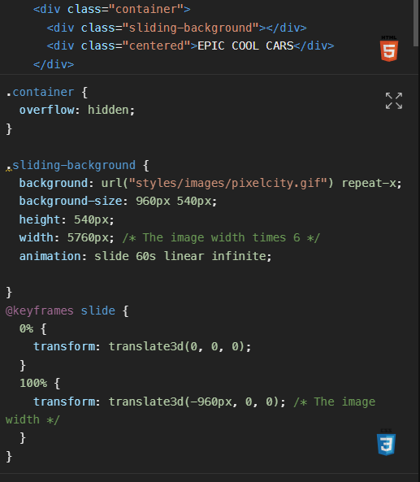
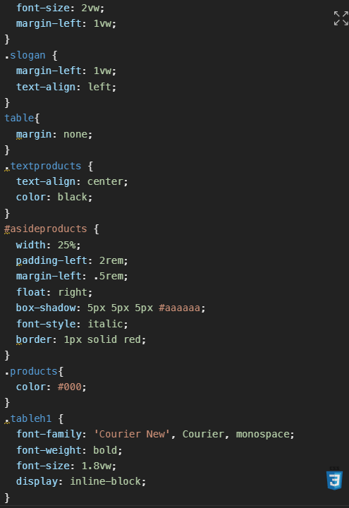
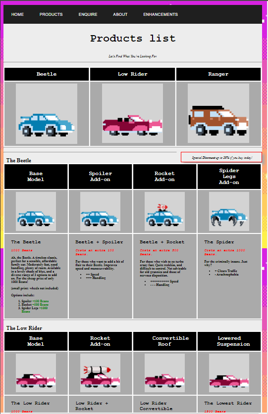

Additional CSS properties:
On the index page of the site the gif graphic uses a CSS Animation property, which allowed it to scroll continuously across the screen.
This goes beyond the requirements of the assignment, as although the index page required a graphic, it was not required to make it animated, and CSS animations were not covered in the tutorials (not yet at least).
Code used to implement Feature:

Technique source
|
|
Responsive CSS:
On the products page, Responsive CSS Design is implemented, allowing it to resize for mobile devices.
This is beyond the basic requirements of the assignment and is a listed potential enhancement.
Here is a sample of the CSS code used to implement the feature, note use of dynamic rather than fixed (vw, %, etc):

|
 |